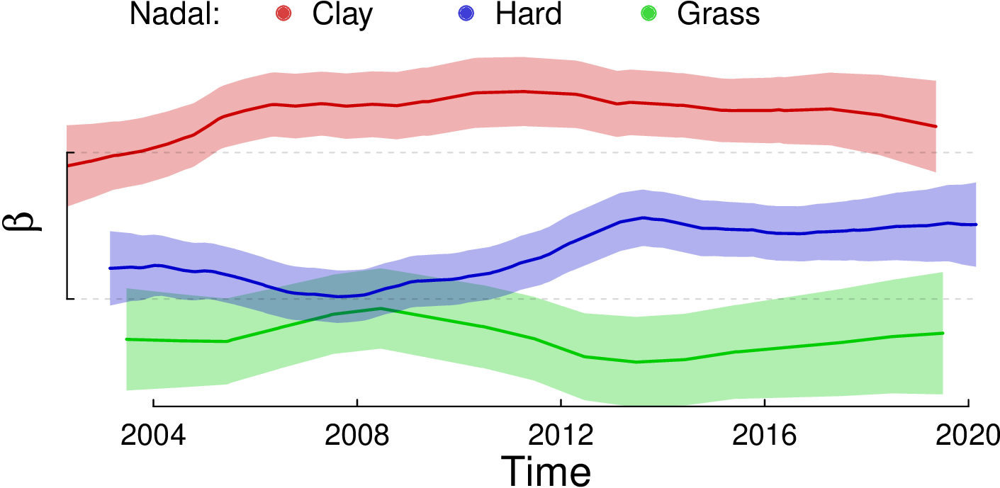

Packages:
- Julia Package: https://github.com/glandfried/TrueSkillThroughTime.jl
- Python Package: https://github.com/glandfried/TrueSkillThroughTime.py
- R package: https://github.com/glandfried/TrueSkillThroughTime.R
Full scientific documentation:
- English. Last version 2021-07-26
- Español. Última versión 2021-07-26
TrueSkillThroughTime.jl
None of the commonly used skill estimators, such as TrueSkill, Glicko and Item-Response Theory, correctly models the temporal aspect, which prevents having both good initial estimates and comparability between estimates separated in time and space.
TrueSkill Through Time corrects those biases by modeling the entire history of activities using a single Bayesian network. The use of an efficient algorithm, that requires only a few linear iterations over the data, allows scaling to millions of observations in few seconds.
Parameters
In the following code we define the variables that we will use later, assigning the default values of the packages.
mu = 0.0; sigma = 6.0; beta = 1.0; gamma = 0.03; p_draw = 0.0
Players
With these default values we create four identical players.
a1 = Player(Gaussian(mu, sigma), beta, gamma); a2 = Player(); a3 = Player(); a4 = Player()
The Gaussian class is used to model the standard operations of Gaussian distributions including multiplication, summation, division, and substraction.
Games
In the next step we create a game with two teams of two players.
team_a = [ a1, a2 ]
team_b = [ a3, a4 ]
teams = [team_a, team_b]
g = Game(teams)
where the result of the game is implicitly defined by the order of the teams in the list: the teams appearing first in the list (lower index) beat those appearing later (higher index).
During the initialization, the class Game computes the prior prediction of the observed result and the approximate likelihood of each player.
lhs = g.likelihoods[1][1]
ev = g.evidence
ev = round(ev, digits=3)
print(ev)
> 0.5
In this case, the evidence is 0.5 indicating that both teams had the same probability of winning given the prior estimates.
Posteriors can be found by manually multiplying the likelihoods and priors, or we can call the method posteriors() of class Game to compute them.
pos = posteriors(g)
print(pos[1][1])
> Gaussian(mu=2.361, sigma=5.516)
print(lhs[1][1] * a1.prior)
> Gaussian(mu=2.361, sigma=5.516)
Due to the winning result, the estimate of the first player of the first now has a larger mean and a smaller uncertainty.
We now analyze a more complex. The players are organized in three teams of different size: two teams with only one player, and the other with two players. The result has a single winning team and a tie between the other two losing teams.
ta = [a1]
tb = [a2, a3]
tc = [a4]
teams = [ta, tb, tc]
result = [1., 0., 0.]
g = Game(teams, result, p_draw=0.25)
the team with the highest score is the winner and the teams with the same score are tied. The evidence and the posteriors can be queried in the same way as before.
Sequence of Events
The class History is used to compute the posteriors and evidence of a sequence of events.
In the first example, we instantiate the class with three players "a", "b", "c" and three games in which all agents win one game and lose the other.
c1 = [["a"],["b"]]
c2 = [["b"],["c"]]
c3 = [["c"],["a"]]
composition = [c1, c2, c3]
h = History(composition, gamma=0.0)
where the variables c1, c2, and c3 model the composition of each game using the names of the agents (i.e. their identifiers), the variable composition is a list containing the three events, and the zero value of the parameter gamma specifies that skills does not change over time.
After initialization, the class History immediately instantiates a new player for each name and activates the computation of the TrueSkill estimates, using the posteriors of each event as a prior for the next one.
lc = learning_curves(h)
print(lc["a"])
> [(1, Gaussian(mu=3.339, sigma=4.985)), (3, Gaussian(mu=-2.688, sigma=3.779))]
print(lc["b"])
> [(1, Gaussian(mu=-3.339, sigma=4.985)), (2, Gaussian(mu=0.059, sigma=4.218))]
The learning curves of players "a" and "b" contain one tuple per game played (not including the initial prior): each tuple has the time of the estimate as the first component, and the estimate itself as the second one.
Although in this example no player is stronger than the others, the TrueSkill estimates present strong variations between players.
TrueSkill Through Time solves this problem by allowing the information to propagate throughout the system by calling the method convergence().
convergence(h)
lc = learning_curves(h)
print(lc["a"])
> [(1, Gaussian(mu=0.0, sigma=2.395)), (3, Gaussian(mu=-0.0, sigma=2.395))]
print(lc["b"])
> [(1, Gaussian(mu=-0.0, sigma=2.395)), (3, Gaussian(mu=0.0, sigma=2.395))]
TrueSkill Through Time not only returns correct estimates (same for all players), they also have less uncertainty.
Skill evolution
This example will exhibit that TrueSkill Through Time can correctly follows the skill evolution of a new player taht joins a large community of already known players. In the following code, we generate the target player’s learning curve and 1000 random opponents.
using Random; Random.seed!(999); N = 1000
function skill(experience, middle, maximum, slope)
return maximum/(1+exp(slope*(-experience+middle)))
end
target = skill.(1:N, 500, 2, 0.0075)
opponents = Random.randn.(1000)*0.5 .+ target
The list target has the agent’s skills at each moment: the values start at zero and grow smoothly until the target player’s skill reaches two.
The list opponents includes the randomly generated opponents' skills following a Gaussian distribution centered on each of the target’s skills and a standard deviation of 0.5.
composition = [[["a"], [string(i)]] for i in 1:N]
results = [r? [1.,0.]:[0.,1.] for r in (Random.randn(N).+target.>Random.randn(N).+opponents)]
times = [i for i in 1:N]
priors = Dict{String,Player}()
for i in 1:N priors[string(i)] = Player(Gaussian(opponents[i], 0.2)) end
h = History(composition, results, times, priors, gamma=0.015)
convergence(h)
mu = [tp[2].mu for tp in learning_curves(h)["a"]]
In this code we define four variables to instantiate the class History: the composition contains 1000 games between the target player and different opponents; the results are obtained randomly, sampling the performance of the players; the time is a list of integer ranging from 0 to 999 representing the time of each game; and priors is a dictionary used to customize player attributes (we assign low uncertainty to the opponents' priors pretending that we know their skills beforehand).
The Figure shows the evolution of the true (solid line) and estimated (dotted line) learning curves of the target player.

The estimated learning curves remain close to the actual skill during the whole evolution.
ATP History
In this last example, we analyze the complete history of the Association of Tennis Professionals (ATP) registered matches.
The database has 447000 games starting at year 1915 until 2020 with more than 19000 participating players and is publicly available.
The file includes both single and double matches: if the column double has the letter t, the game is a double match.
The file also contains players' identifiers and names: for example column w2_id is the identifier of the second player of the winning team and l1_name is the name of the first player of the losing team.
using CSV; using Dates
data = CSV.read("atp.csv")
dates = Dates.value.(data[:,"time_start"] .- Date("1900-1-1"))
matches = [ r.double == "t" ? [[r.w1_id,r.w2_id],[r.l1_id,r.l2_id]] : [[r.w1_id],[r.l1_id]] for r in eachrow(data) ]
h = History(composition = matches, times = dates, sigma = 1.6, gamma = 0.036)
convergence(h, epsilon = 0.01, iterations = 10)
In this code we open the file atp.csv, create the variables dates and matches, and instantiate the class History.
The following figure presents the learning curves of some famous players in ATP history.

Those who know the history of tennis will be able to recognize the periods of crisis, stability and success of the players.
There is a relative coincidence between skill and who is at any given moment at the top of the ATP rankings, it is possible to observe the effects of injuries, and even the effect of emotional slumps such as those that Aggasi and Djockovic had.
It is interesting to see that the skill of tennis players did not increase so much over the years: on the contrary the players of the 1980s were more skilled than those of the 1990s, and reached a skill similar to what Federer, Nadal and Djokovic had in 2020.
There are also some differences between players' skills and the ATP ranking, especially with respect to the historical ranking (based on the total number of weeks at the top of the ranking): the 10th-ranked player, Hewitt, actually has relatively low skill; and the fourth most skilled player, Murray, is ranked 14th, just one place above Nastase.
TrueSkill Through Time, unlike ATP ranking and estimators based on the filtering approach (such as TrueSkill, Glicko and IRT) allows comparing the relative ability of players over time.
Multi-dimensional skills
In the ATP example we summarize the players' skills in a single dimension. We know, however, that the ability of tennis players can vary significantly depending on the type of ground.
TrueSkill Through Time allows estimating this type of multi-dimensional skills. One option is to keep one skill variable per player, that we include in all games, and one skill variable per ground, that we add as their teammate depending on the type of game.
players = Set(vcat((composition...)...))
priors = Dict([(p, Player(Gaussian(0., 1.6), 1.0, 0.036) ) for p in players])
composition_ground = [ r.double == "t" ? [[r.w1_id, r.w1_id*r.ground, r.w2_id, r.w2_id*r.ground],[r.l1_id, r.l1_id*r.ground, r.l2_id, r.l2_id*r.ground]] : [[r.w1_id, r.w1_id*r.ground],[r.l1_id, r.l1_id*r.ground]] for r in eachrow(data) ]
h_ground = History(composition = composition_ground, times = dates, sigma = 1.0, gamma = 0.01, beta = 0.0, priors = priors)
convergence(h_ground, epsilon = 0.01, iterations=10)
In this example we keep the same prior as before for the players, this time defined in the variable priors.
In this way, the values chosen to initialize the class History will only be used for the ground skill factors.
For those factors we chose a null beta so as not to add more noise to the players' performance, keeping the scale of the estimates stable.
In the following figures we show the skill difference that Nadal and Djokovic have in each of the three types of ground.


We can see that Nadal has a big skill difference between grounds, unlike Djokovic who has very similar skills on all three types of ground. The Nadal’s skill difference between clay and grass gorunds is greater than one ponit, which means at least 76% difference in probability of winning compared to itself.
To assess whether the complexity added by modeling multidimensionality is appropriate in general terms, we can compare the joint priori prediction of the models, calling the method \texttt{log_evidence()} of the class \texttt{History}.
Estructure
- src/TrueSkill.jl: Main file
- test/runrests.jl: Unit test
Inside test/ and example/ you will find a makefile. In each folder you can execute the entire procedure by typing make in the terminal.